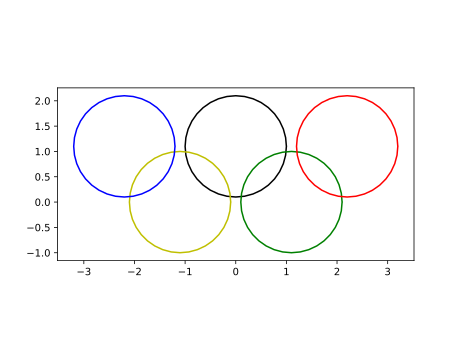
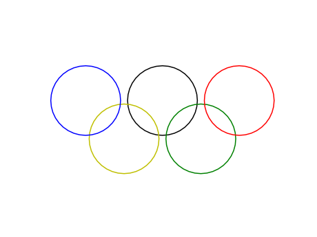
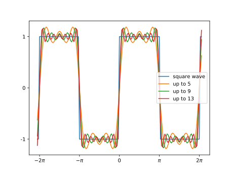

第12回：関数の定義と呼び出し
■ 関数の定義と呼び出し
■ 関数の定義 (代入文形式) の節で、代入文形式のユーザ関数の定義を紹介した。 この節では、より一般的な扱いを説明する。
より広い意味では、一連のプログラム片に名前を付けたものが、関数 (function) である。
■ 関数の定義と呼び出し：引数がない場合
以下は、Hello という文字を印字する関数の定義を示す。
関数定義は、キーワード function で始まり、その後に関数名を書く。 呼び出す際に、渡すべき値がなければ、関数名の後に、括弧・閉じ括弧 () を書くだけである。
処理を記述した後、キーワード end で終わる。
julia> function hello()
println("Hello")
end
hello (generic function with 1 method)この関数を呼び出すには、関数名に続けて () を書けばよい。
julia> hello()
Hello
julia> hello()
Hello■ 関数の定義と呼び出し：引数がある場合
関数を呼び出す際に、渡す値がある場合は、関数名の後に、 括弧 () で囲んで、変数名 (仮引数(「かり・ひきすう」 parameter )の並びを書く。
julia> function hello(name)
print( "Hello ")
println( string(name))
end
hello (generic function with 2 methods)この関数を呼び出すには、関数名に続けて () に囲んで、具体的な値（実引数「じつ・ひきすう」argument)を書く。 関数の定義の中に出現した仮引数は、実引数の値に置き換えられる。
julia> hello( "world")
Hello world
julia> hello( "the Earth")
Hello the Earth
julia> hello()
Hello
julia> # 例外: 実引数 2つ
hello( "world", "the Earth" )
ERROR: MethodError: no method matching hello(::String, ::String)
Closest candidates are:
hello(::Any) at none:2関数 hello に対して、引数が 0個の場合の定義と、引数が 1個の場合の定義の２つが紐(ひも)ついている。 関数呼び出しにおける引数の数に応じて、対応する関数が実行される。 上の最後の例のように、対応する関数定義が見つからなければ、例外が発生する。
▶ 円を描く関数を作る
PyPlotパッケージを読み込んだ状況で、円を描く関数を作成する。
引数は、円の中心座標 cx, cy、円の半径 r、線の色 col とする。
function draw_circle(cx,cy,c,r)
t=0:pi/18:2pi
xs=cx+r*cos.(t)
ys=cy+r*sin.(t)
plot(xs,ys, color=c)
enddraw_circle (generic function with 1 method)５つの円を描いてみよう。
using PyPlot
r=1
s=1.1
draw_circle( 0, s, "k", r)
draw_circle( -s, 0, "y", r)
draw_circle( -2s, s, "b", r)
draw_circle( s, 0, "g", r)
draw_circle( 2s, s, "r", r)
plt[:axes]()[:set_aspect]("equal")
全ての軸を描画しないようにするには、上に続けて plt[:axis]("off") を実行すればよい。
plt[:axis]("off")
オリンピックのシンボルマークは、知的財産権が厳しく保護されていることに留意されたい。
■ 仮引数の既定値
仮引数に続けて =値 を書くことで、既定の値を設定できる。 関数呼び出しで、該当する引数を省略して関数を呼び出した場合には、既定の値が用いられる。
関数 draw_circle で、最後の引数 rの既定値を 1に設定した。
function draw_circle(cx,cy,c,r=1)
t=0:pi/18:2pi
xs=cx+r*cos.(t)
ys=cy+r*sin.(t)
plot(xs,ys, color=c)
endWARNING: Method definition draw_circle(Any, Any, Any, Any) in module ex-ch12 at none:2 overwritten at none:2.
draw_circle (generic function with 2 methods)関数 draw_circle を３つの引数で呼び出した場合には、r=1 として呼び出したとみなされる。
r=1
s=1.1
draw_circle( 0, s, "k" )
draw_circle( -s, 0, "y" )
draw_circle( -2s, s, "b" )
draw_circle( s, 0, "g" )
draw_circle( 2s, s, "r" )1-element Array{PyCall.PyObject,1}:
PyObject <matplotlib.lines.Line2D object at 0x116c2e390>■ 関数の戻り値
関数を実行した結果の値を、呼び出し側で使いたい場合は、しばしばある。
関数定義において、最後に評価した値が、関数の戻り値 (return-value)となる。
■ 関数の定義 (代入文形式) を用いても、数 x を 3倍する関数を定義すると、以下のようになる。
triple(x)=3*xこれをより一般の形式で書くと、以下のようになる。最後に評価した 3*x が関数の戻り値となる。
julia> function triple(x)
3*x
end
triple (generic function with 1 method)julia> triple(-1)
-3■ return キーワード
キーワード return 式 は関数内で用いられると、直ちに関数から抜ける（戻る）ことを指示する。 この際、式の結果が関数の戻り値となる。
上の関数は、以下のようにも書ける (が、冗長である)。
function triple(x)
return 3*x
endまた、数 x の絶対値を求める関数を自前で書いてみると、以下のようになる。
julia> function myabs(x)
if x < 0
return -x
else
return x
end
end
myabs (generic function with 1 method)julia> myabs(-1)
1上の myabsは■ 3項演算子を用いて、以下のように書いてもよい。
myabs(x)= x<0 ? -x : x■ 局所変数
関数内部で代入した変数 (局所変数, local variables)は、その関数内部でのみ生きている。
下の例で、関数 triple 内部で代入した tは、関数 triple のみで生きている。 コマンドラインで定義した変数 t は、関数 triple の局所変数 t とは別物であり、関数呼び出し後も値は変わっていない。 コマンドラインで定義した変数 t の方を、全域変数 (global variables)ともいう。
julia> t=4
4
julia> function triple(x)
t=3
t*x
end
WARNING: Method definition triple(Any) in module ex-ch12 at none:2 overwritten at none:2.
triple (generic function with 1 method)
julia> triple(2)
6
julia> @show t;
t = 4▶ ヘロンの公式を関数にする
ヘロンの公式 (Heron's formula) によれば、 3辺の長さが $a, b, c$ である三角形の面積は
で与えられる。
ヘロンの公式を用いて、三角形の面積を返す関数を定義してみる。
julia> function heron(a,b,c)
s=(a+b+c)/2
r=s*(s-a)*(s-b)*(s-c)
if r < 0
return 0.0
end
sqrt(r)
end
heron (generic function with 1 method)三辺 $a, b, c$から三角形を作ることができない場合には、平方根の中身が負になる。 このときは、面積として 0 を返すことにする。
実行してみよう。
julia> heron(3,4,5)
6.0
julia> # 三角形ができない場合
heron(3,3,7)
0.0▶︎ 方形波のフーリエ級数和を関数にする
方形波をフーリエ級数の和として計算する方法を、▶︎ 方形波：フーリエ級数の有限和 の節で、紹介した。 時刻の配列 ts における方形波を、奇数 $n$ までのフーリエ級数和として計算する関数を書いてみる。
function square(ts,n)
ys=zeros(ts)
for i in 1:2:n
ys += sin.(i*ts)/i*4/pi
end
ys
endsquare (generic function with 1 method)実行してみよう。
@show square( (0:6)*pi/4 , 13);square(((0:6) * pi) / 4, 13) = [0.0, 1.00437, 1.04525, 1.00437, 1.15475e-15, -1.00437, -1.04525]級数和の上限 $n$ を変えて、グラフをプロットしよう。
using PyPlot
ts=-74*pi/36:pi/36:74*pi/36
plot(ts, sign.(sin.(ts)), label="square wave" )
for n in [ 5, 9, 13]
plot(ts, square(ts, n), label="up to "*string(n) )
end
legend(loc="center right")
yticks( [-1,0,1], [ "-1", "0", "1"])
xticks( [-2pi,-pi,0, pi, 2pi ],
[L"-2\pi", L"-\pi","0", L"\pi", L"2\pi" ])
◀ 練習
上の関数 square を以下のように改良せよ。
$n$ が偶数の場合でも、適切な解釈に基づき動作するようにせよ。
$n$ が 3よりも小さい場合は
n=13とせよ。
▶︎ Riemann和の計算を関数にする
関数の定積分の近似値を、短冊の面積の和として計算する方法を ▶︎ Riemann和（繰り返しで加算)の節で、紹介した。 関数 f、定積分の範囲 a, b、分割数 n を引数として、Rienmann和を計算する関数を書いてみる。
function riemann_sum(f,a,b,n)
xs=linspace(a,b,n+1)
d=(b-a)/n
s1=0
for i in 1:n
x=xs[i]
s1 += g(x)*d
end
s1
endriemann_sum (generic function with 1 method)実行してみよう。
g(x)=1/(1+x)
a=0; b=1
@show riemann_sum(g,a,b,2^10);riemann_sum(g, a, b, 2 ^ 10) = 0.6933913807895831分割数を変えてみる。
for m=8:13
@show m, riemann_sum(g,a,b,2^m);
end
@show log(2);(m, riemann_sum(g, a, b, 2 ^ m)) = (8, 0.694124696732443)
(m, riemann_sum(g, a, b, 2 ^ m)) = (9, 0.6936357002284099)
(m, riemann_sum(g, a, b, 2 ^ m)) = (10, 0.6933913807895831)
(m, riemann_sum(g, a, b, 2 ^ m)) = (11, 0.6932692657736083)
(m, riemann_sum(g, a, b, 2 ^ m)) = (12, 0.6932082194414848)
(m, riemann_sum(g, a, b, 2 ^ m)) = (13, 0.693177699069395)
log(2) = 0.6931471805599453◀ 練習
上の例で、相対誤差をプロットせよ。
◀▶︎ 練習
上の関数 riemann_sum を、以下のように改良せよ。
$n < 1$ の場合には、ただちに
0を返すようにせよ。$n < 1$ の場合には、$n=4$ として、計算せよ。
$a > b$ の場合には、上限と下限を交換してから計算せよ。ヒント：変数 $a, b$ の値を交換するには、同時代入 $b,a=a,b$ を用いよ。
▶︎ モンテカルロ法による平面図形の面積の近似値を関数にする
平面内のある領域の面積の近似値をモンテカルロ法で求める方法を、▶︎ モンテカルロ法による平面図形の面積の推定 で紹介した。
範囲を表す関数 f、点の数 n を引数として、モンテカルロ法で面積の近似値を計算する関数を書いてみる。 関数 f は、平面座標 x,yを引数にして、(x,y) が図形の内部なら真 trueを、内部でなければ偽 false を返すものとする。 なお、図形の範囲は、$x$座標、$y$座標とも、0から1までの範囲とする。
function montecarlo(f,n)
s=0
for i=1:n
x=rand()
y=rand()
if f(x,y)
s += 1
end
end
s/n
endmontecarlo (generic function with 1 method)四分円に対して、実行してみよう。
quadrant(x,y)= x*x+y*y < 1
n=2^8
@show n, montecarlo(quadrant, n), pi/4(n, montecarlo(quadrant, n), pi / 4) = (256, 0.78125, 0.7853981633974483)
(256, 0.78125, 0.7853981633974483)点の数を変えてみる。
for m=1:10
n=2^m
@show n, montecarlo(quadrant, n);
end(n, montecarlo(quadrant, n)) = (2, 1.0)
(n, montecarlo(quadrant, n)) = (4, 0.5)
(n, montecarlo(quadrant, n)) = (8, 0.75)
(n, montecarlo(quadrant, n)) = (16, 0.6875)
(n, montecarlo(quadrant, n)) = (32, 0.8125)
(n, montecarlo(quadrant, n)) = (64, 0.859375)
(n, montecarlo(quadrant, n)) = (128, 0.7890625)
(n, montecarlo(quadrant, n)) = (256, 0.8125)
(n, montecarlo(quadrant, n)) = (512, 0.794921875)
(n, montecarlo(quadrant, n)) = (1024, 0.775390625)今度は、二つの不等式 y<x と y<1−x の両方に囲まれる領域の面積を推定しよう。
tri1(x,y)= y < x && y < 1-x
n=2^8
@show n, montecarlo(tri1, n)(n, montecarlo(tri1, n)) = (256, 0.20703125)
(256, 0.20703125)点の数を変えてみる。
for m=4:12
n=2^m
@show n, montecarlo(tri1, n);
end
@show 1/4(n, montecarlo(tri1, n)) = (16, 0.0625)
(n, montecarlo(tri1, n)) = (32, 0.21875)
(n, montecarlo(tri1, n)) = (64, 0.265625)
(n, montecarlo(tri1, n)) = (128, 0.2265625)
(n, montecarlo(tri1, n)) = (256, 0.26953125)
(n, montecarlo(tri1, n)) = (512, 0.255859375)
(n, montecarlo(tri1, n)) = (1024, 0.2431640625)
(n, montecarlo(tri1, n)) = (2048, 0.25048828125)
(n, montecarlo(tri1, n)) = (4096, 0.256103515625)
1 / 4 = 0.25
0.25◀ 練習
上の２つの例で、相対誤差をプロットせよ。
◀▶︎ 練習
上の関数 montecarlo を、以下のように改良せよ。
$n \le 1$ の場合には、$n=2^8$ として、計算せよ。
■ 関数から複数の値を返す
■ タプル の小節で、関数 divrem のように、複数の値を返す関数があることを紹介した。
ユーザ関数から複数の値を返すには、関数定義の最後に評価する式において、カンマ , で区切って復数の式を書けばよい。 この関数の戻り値は、■ タプル となる。
function one_two()
1,2
end
@show one_two()one_two() = (1, 2)
(1, 2)x,y=one_two()
@show x,y(x, y) = (1, 2)
(1, 2)▶︎ 「はさみうち」法による、方程式の求解を関数にする
「はさみうち」法を用いて、方程式の解の存在範囲を狭めていく方法を、▶︎ 「はさみうち」法による、方程式の求解 で紹介した。
求めるべき方程式 f、解の存在範囲の下限 a、および 上限 b を引数として、より狭い解の存在範囲の下限と上限を返す関数を書いてみる。
function bisect(f,a,b)
c=(a+b)/2
if f(a)*f(c) > 0
a = c
else
b = c
end
a,b
endbisect (generic function with 1 method)g(x)=x^3+3x^2-4*x-12
a=-3.2; b=-2.6
for i=1:10
@show a, b, b-a, g(a), g(b)
a,b=bisect(g,a,b)
endWARNING: Method definition g(Any) in module ex-ch12 at none:1 overwritten at none:1.
(a, b, b - a, g(a), g(b)) = (-3.2, -2.6, 0.6000000000000001, -1.248000000000001, 1.1039999999999974)
(a, b, b - a, g(a), g(b)) = (-3.2, -2.9000000000000004, 0.2999999999999998, -1.248000000000001, 0.4409999999999954)
(a, b, b - a, g(a), g(b)) = (-3.0500000000000003, -2.9000000000000004, 0.1499999999999999, -0.26512500000000294, 0.4409999999999954)
(a, b, b - a, g(a), g(b)) = (-3.0500000000000003, -2.9750000000000005, 0.07499999999999973, -0.26512500000000294, 0.12126562499999949)
(a, b, b - a, g(a), g(b)) = (-3.0125, -2.9750000000000005, 0.037499999999999645, -0.06343945312499955, 0.12126562499999949)
(a, b, b - a, g(a), g(b)) = (-3.0125, -2.9937500000000004, 0.018749999999999822, -0.06343945312499955, 0.031015869140624375)
(a, b, b - a, g(a), g(b)) = (-3.0031250000000003, -2.9937500000000004, 0.009374999999999911, -0.015683624267579077, 0.031015869140624375)
(a, b, b - a, g(a), g(b)) = (-3.0031250000000003, -2.9984375000000005, 0.0046874999999997335, -0.015683624267579077, 0.007797855377194907)
(a, b, b - a, g(a), g(b)) = (-3.00078125, -2.9984375000000005, 0.0023437499999996447, -0.003909912586216535, 0.007797855377194907)
(a, b, b - a, g(a), g(b)) = (-3.00078125, -2.9996093750000004, 0.0011718749999998224, -0.003909912586216535, 0.0019522095322592747)◀ 練習
上の例で、解の存在範囲が狭くなる様子をプロットせよ。
異なる解の存在範囲に対して、「はさみうち」法を実行せよ。
■ 引数の型の指定
関数定義の仮引数には ::型 という形式で、仮引数の型を指定できる。 関数呼出しの際、実引数の型と仮引数の型が一致する関数が呼び出される。 この仕組を、多重ディスパッチ (multiple dispatch)という。
型が指定されていない仮引数は、Any型とみなされ、あらゆる実引数の型と一致する。
個別の仮引数に対応する関数は、メソッドと呼ばれる。
例で説明する。
関数 mytest を、Int64型の引数に対してだけ定義しよう。
julia> function mytest(x::Int64)
println(string(x)*" is of Int64 type")
end
mytest (generic function with 1 method)この段階で、mytest(1) は上の関数が呼び出されるが、mytest(1.0) は呼び出されるべき関数が見つからず、例外が発生する。
julia> # 関数が呼び出される
mytest(1)
1 is of Int64 type
julia> # 関数が呼び出されない
mytest(1.0)
ERROR: MethodError: no method matching mytest(::Float64)
Closest candidates are:
mytest(!Matched::Int64) at none:2関数 mytest を、Float64型の引数に対しても定義する。
julia> function mytest(x::Float64)
println(string(x)*" is of Float64 type")
end
mytest (generic function with 2 methods)
julia> # 今度は、上の関数が呼び出される
mytest(1.0)
1.0 is of Float64 typeしかし、mytest("a") や mytest("[1]") は呼び出されるべき関数が見つからず、例外が発生する。
julia> # 関数が呼び出されない
mytest("a")
ERROR: MethodError: no method matching mytest(::String)
Closest candidates are:
mytest(!Matched::Float64) at none:2
mytest(!Matched::Int64) at none:2
julia> # 関数が呼び出されない
mytest([1])
ERROR: MethodError: no method matching mytest(::Array{Int64,1})
Closest candidates are:
mytest(!Matched::Float64) at none:2
mytest(!Matched::Int64) at none:2更に、仮引数に型を指定しない関数を定義すれば、そちらが呼び出される。
julia> function mytest(x)
println(string(x)*" is neither of Int64 type nor of Float64 type")
end
mytest (generic function with 3 methods)
julia> # 今度は、上の関数が呼び出される
mytest("a")
a is neither of Int64 type nor of Float64 type
julia> # 今度は、上の関数が呼び出される
mytest([1])
[1] is neither of Int64 type nor of Float64 type▶ 階乗関数を定義する
1 から整数 n までの連続する整数の積を、階乗 (factorial)といい、$n!$ のように書く。
$ 6 ! = 6 \times 5 \times 4 \times 3 \times 2 \times 1 = 720$
さらに、$0! = 1$ と定義する。
階乗を計算する関数を定義しよう。 階乗関数は整数に対してのみ定義されるから、引数を整数型に限定しよう。 0よりも小さい整数に対して、階乗は定義されないが、1を返すことにする。
julia> function myfact1(n::Int64)
n <= 1 && return 1
r=1
for i=2:n
r *= i
end
r
end
myfact1 (generic function with 1 method)正しく計算されることを確かめてみる。
julia> for n in 6:-1:-1
@show n, myfact1(n)
end
(n, myfact1(n)) = (6, 720)
(n, myfact1(n)) = (5, 120)
(n, myfact1(n)) = (4, 24)
(n, myfact1(n)) = (3, 6)
(n, myfact1(n)) = (2, 2)
(n, myfact1(n)) = (1, 1)
(n, myfact1(n)) = (0, 1)
(n, myfact1(n)) = (-1, 1)浮動小数点数や整数ベクトルに対して、関数 myfact1は未定義である。
julia> # 関数は未定義
myfact1(2.2)
ERROR: MethodError: no method matching myfact1(::Float64)
Closest candidates are:
myfact1(!Matched::Int64) at none:2
julia> # 関数は未定義
myfact1([6,3])
ERROR: MethodError: no method matching myfact1(::Array{Int64,1})
Closest candidates are:
myfact1(!Matched::Int64) at none:2整数を要素とするベクトルに対して dot記法を用いて myfact1 を呼び出せば、 各要素に対して関数 myfact1 を呼び出した値のベクトルが得られる。
julia> myfact1.([6,5,4])
3-element Array{Int64,1}:
720
120
24Julia には、階乗関数 factorial(n) が組み込まれている。
factorial(1)
factorial(2)
factorial(3)▶ 再帰
階乗には $n! = n \times (n-1)!$ という性質がある。 すなわち、$n!$ は $(n-1)!$ を用いて定義される。
これをプログラムで書く場合には、関数定義の中で自分自身を呼ぶ、これを再帰 (recursion) という。
再帰を用いて、階乗を定義してみよう。
julia> function myfact2(n::Int64)
n <= 1 && return 1
n * myfact2(n-1)
end
myfact2 (generic function with 1 method)正しく計算されることを確かめてみる。
julia> for n in 6:-1:-1
@show n, myfact2(n)
end
(n, myfact2(n)) = (6, 720)
(n, myfact2(n)) = (5, 120)
(n, myfact2(n)) = (4, 24)
(n, myfact2(n)) = (3, 6)
(n, myfact2(n)) = (2, 2)
(n, myfact2(n)) = (1, 1)
(n, myfact2(n)) = (0, 1)
(n, myfact2(n)) = (-1, 1)再帰呼出しを用いる場合には、計算が正しく終了する条件を設定する必要がある。
◀ 練習
フィボナッチ(Fibonacci)数とは、以下の漸化式で定義される数列である。
整数 $n$に対してフィボナッチ数を計算する関数を再帰を用いて定義し、その動作を確かめよ。
フィボナッチ数の最初の20個は、以下の通りである。
また、フィボナッチ数の一般項は、以下の式で与えられることが知られている。合わせて、計算してみよ。
上で示した階乗やフィボナッチ数の例では、関数が呼ばれる毎に計算を行っており「もったいない」。 計算結果が一意 (一通り, unique) であるなら、計算した結果を記録しておき、同じ引数で再び呼び出されたときには、 記録から取り出してくれば計算資源が節約できる。このような考え方を「メモ化」という。この本文で説明した範囲でも、 ベクトルなどを用いて「メモ化」を実装できるであろう。
■ 今回のまとめ
関数
定義
呼出し
戻り値
仮引数の型
再帰呼出し
例題
ヘロンの公式
フーリエ級数和の関数化
モンテカルロ法の関数化
はさみうち法の関数化
階乗
フィボナッチ数